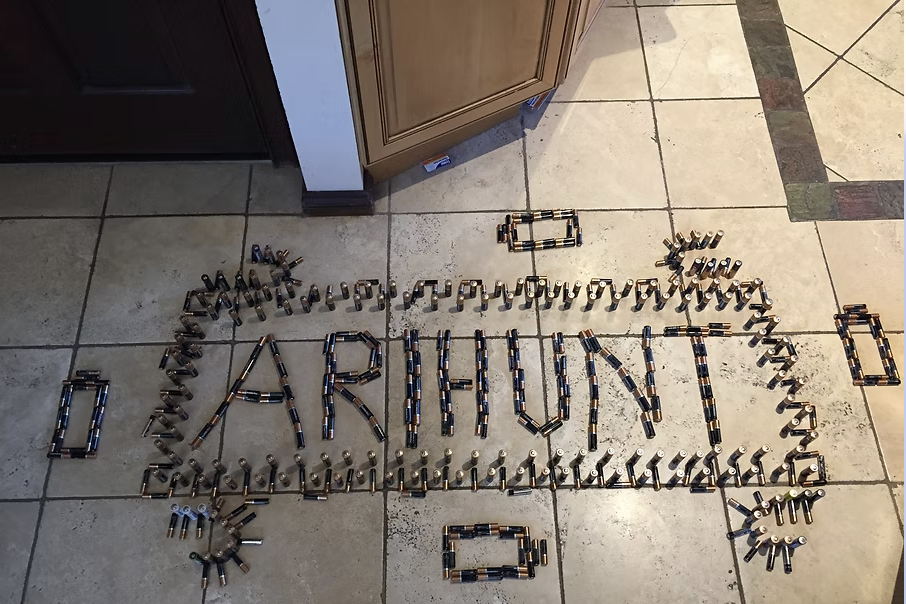
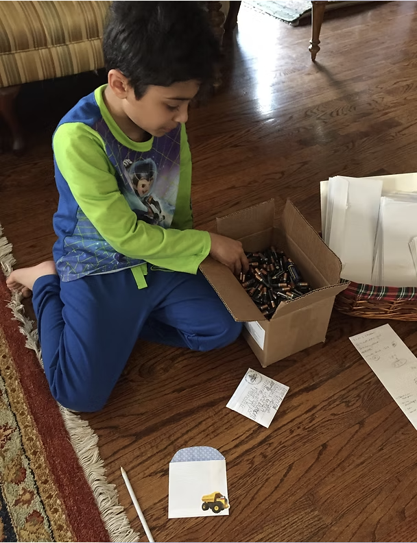
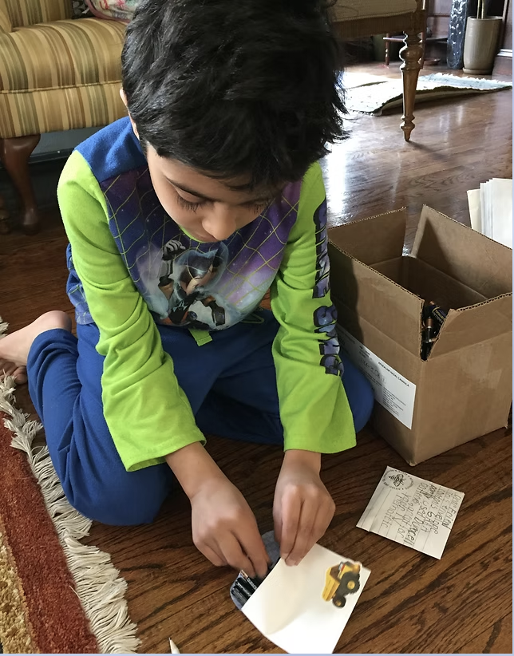
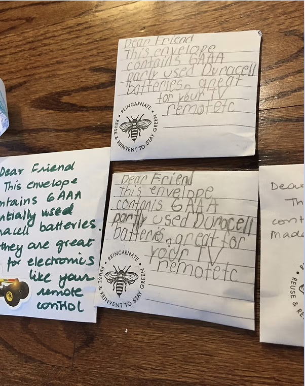
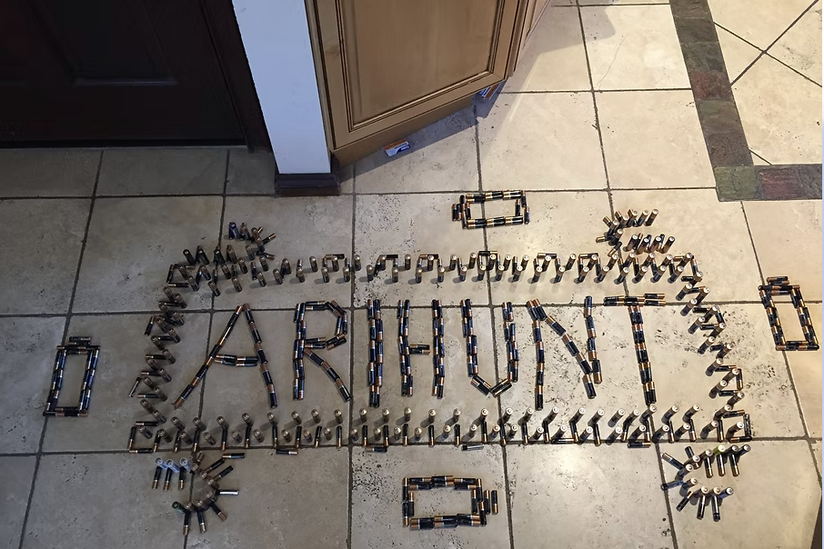
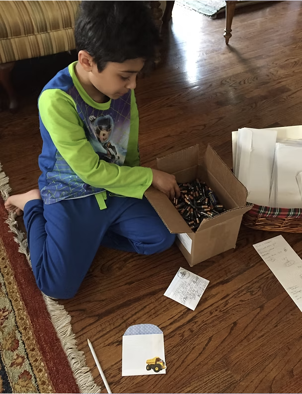
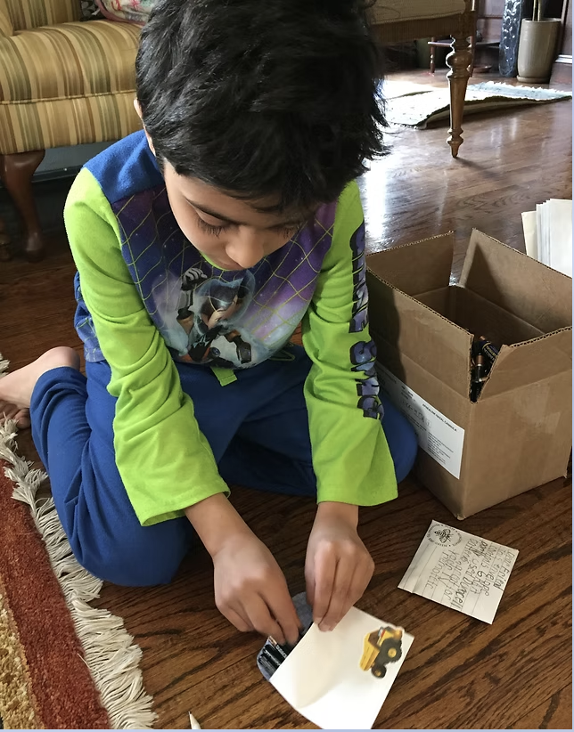
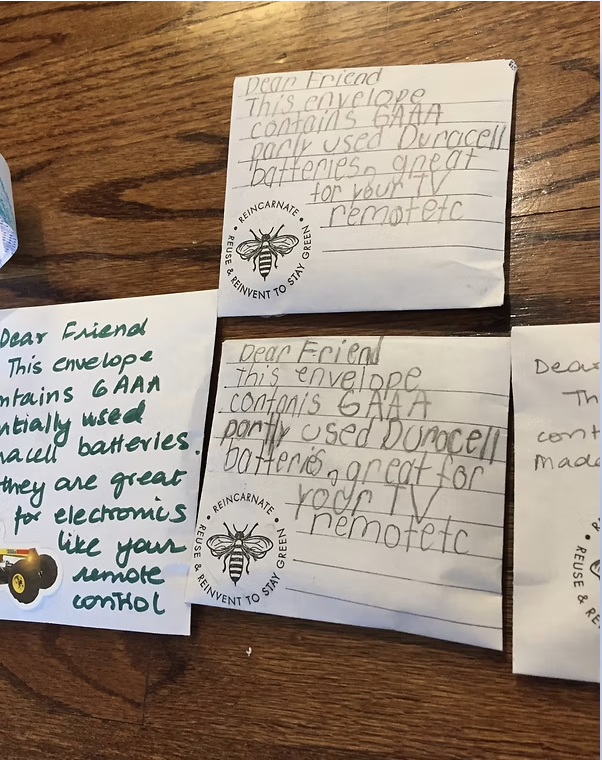

How We Got The Idea
Freshkills Park Discovery
Freshkills Park is the largest park to be developed in New York City in over 100 years. It is also the site of the Fresh Kills Landfill, which was the largest landfill in the world prior to its closing in 2001. Since then, the area is being developed as a wildlife haven and a park for recreation.
In 2016 on a discovery trip to Freshkills Park, we learned how batteries can harm the environment and decided to do something about it. We were at our doctors' office for a check-up and noticed that her assistant would remove batteries from monitors and throw them away. The batteries had only been used for a few hours. The assistant said that they were safe to reuse but cannot be used in the office because monitors need fresh batteries to work efficiently.
Our Process
We created a simple reuse system to prevent usable batteries from entering the trash stream:
- We supplied offices with battery collection bins
- Collected partially used batteries 4-6 times a year
- Weighed, counted and inspected our collection
- Sorted them by size and type
- Filled them in decorated envelopes
- Wrote a message about recycling and reuse
- Handed them out to be used in remote control devices
- Initiated conversations about the importance of reusing and recycling
 






